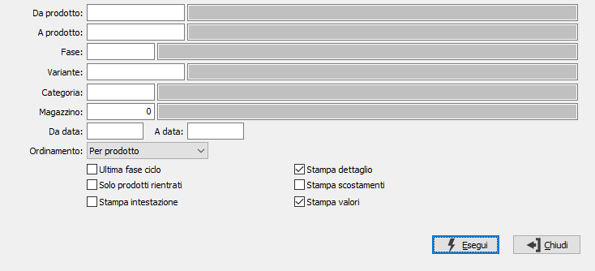

Analisi avanzamento produzione
La procedura risponde all’esigenza di conoscere lo stato di avanzamento all’interno del ciclo di produzione di un determinato articolo e/o ordine.
L’analisi riporta le quantità prodotte, il valore dei materiali utilizzati, ed i costi di lavorazione registrati per ciascuna fase del ciclo, per cui è possibile conoscere in tempo reale i costi di ogni singola commessa.
L'analisi considera solo produzioni che derivino da ordini verso clienti.

DA PRODOTTO: eventuale codice dell'articolo, presente in anagrafica Prodotti, da cui si desidera iniziare la selezione. Confermando a vuoto, la selezione inizia con il primo prodotto valido. Sul campo è attiva la ricerca (F9) sull’anagrafica prodotti.
A PRODOTTO: eventuale codice dell'articolo, presente in anagrafica Prodotti, a cui si desidera terminare la selezione. Confermando a vuoto, la selezione termina con l’ultimo valido. Sul campo è attiva la ricerca (F9) sull’anagrafica prodotti.
FASE: eventuale codice della fase di lavorazione, per cui si desidera effettuare la selezione di analisi. Confermando a vuoto, la selezione considera tutte le fasi di lavorazione. Sul campo sono attive le funzioni di ricerca (F9).
COMMESSA DI PRODUZIONE: se gestito in configurazione l'utilizzo della commessa di produzione è possibile limitare l'inventario ad un'unica commessa di produzione inserendola in questo campo.
CATEGORIA MERCEOLOGICA: eventuale codice della categoria merceologica a cui si vuole restringere la selezione di analisi. Sul campo è attiva la ricerca (F9) sulla tabella Categorie merceologiche.
MAGAZZINO: eventuale codice del magazzino a cui si vuole restringere la selezione di analisi. Confermando a vuoto, l’esistenza del prodotto si riferisce a tutti i magazzini. Sul campo è attiva la ricerca (F9) sulla tabella Magazzini.
DA DATA: eventuale data da cui deve iniziare l’analisi degli ordini clienti. Confermando a vuoto, l’analisi inizia con il primo movimento valido.
A DATA: eventuale data con cui si desidera terminare l’analisi degli ordini clienti. Confermando a vuoto, l’analisi si conclude con l'ultimo movimento valido.
ORDINAMENTO PER: combo box per definire i criteri di ordinamento. Valori ammessi: Per prodotto; Per Commessa/ordine.
ULTIMA FASE CICLO: definisce se stampare solo l'ultima fase del ciclo di lavorazione (casella con segno di spunta) oppure tutte le fasi movimentate (casella vuota).
SOLO PRODOTTI RIENTRATI: definisce se stampare solo i prodotti per cui sono stati effettuati dei rientri (casella con segno di spunta).
STAMPA INTESTAZIONE: Indica se stampare una pagina con i criteri di selezione della stampa, l’operatore che l’ ha eseguita, la data e l’ora (casella con segno di spunta).
STAMPA DETTAGLIO: definisce se stampare il dettaglio dell'ordine di appartenenza (casella con segno di spunta)
STAMPA SCOSTAMENTI: definisce se effettuare la stampa di un report relativo agli scostamenti di valore tra ordine e produzione (casella con segno di spunta).
STAMPA VALORI: definisce se stampare i valori per il costo dei materiali e delle lavorazioni (casella con segno di spunta) o solo le quantità (casella vuota).